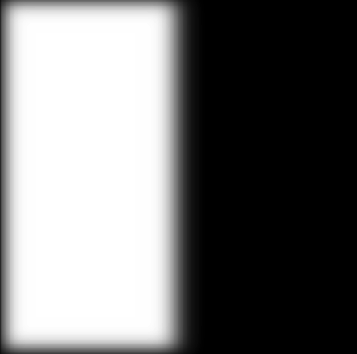

Part 2.1: Image "Sharpening"
Here, we will sharpen a blurry image using the unsharp masking technique.
First, we will convolve the original image of the Taj Mahal with a 2D gaussian Kernel of kernel size = 7 and sigma = 1.
This blurs the image and is considered a low pass filter which leaves only the low frequencies behind.
If we then subtract the blurred image from the original image, we can obtain the high frequencies of the image.
We can then add back the higher frequencies, also scaling it by some value alpha if necessary, to the original image to make it 'sharper'.
Taj Sharpened (alpha = 1)
Here are some other images that I sharpened using the unsharp masking technique.

Bears Sharpened (alpha = 4)
Sheep Sharpened (alpha = 2)
Part 2.2: Hybrid Images
In this part, we will create hybrid images which are static images that we can visualize differently based on our viewing distance.
Again, we can utilize frequencies of images and specifically how humans are able to see high frequencies closer to an image while the lower frequencies are more perceptible from farther away.
We will take 2 images and get the low frequencies of 1 by blurring it using a Gaussian filter. For the other image, we will also blur it to get the low frequencies and subtract the low frequencies from the original image to get the high frequencies.
With the low frequencies of image A and the high frequencies of image B, we can add them to create the 'hybrid' image.

Derek

Nutmeg
Derek Low Frequencies: Kernel Size = 50 / Sigma = 10
Nutmeg High Frequencies: Kernel Size = 50 / Sigma = 10
Here's a hybrid image of Max Verstappen and Charles Leclerc, two of the best Formula 1 drivers on the grid as of lately.
Charles Leclerc Low Frequencies: Kernel Size = 50 / Sigma = 5
Max Verstappen High Frequencies: Kernel Size = 50 / Sigma = 2
FFT Frequency Analysis
Charles Leclerc Low Frequencies FFT
Max Verstappen High Frequencies FFT
Frog and Rat Hybrid Image
Frog Low Frequencies: Kernel Size = 50 / Sigma = 10
Rat High Frequencies: Kernel Size = 50 / Sigma = 8
Here's one that didn't work as well as I wanted it to. I tried to mix Gekko and Wingman but the two input images had different features and backgrounds which also made it difficult to align properly.
Gekko and Wingman Hybrid Image
Gekko Low Frequencies: Kernel Size = 50 / Sigma = 10
Wingman High Frequencies: Kernel Size = 50 / Sigma = 3
Part 2.3 + 2.4: Gaussian and Laplacian Stacks + Multiresolution Blending
We will create Gaussian and Laplacian Stacks which will be useful for blending 2 images together seamlessly.
For the Gaussian stack, keep blurring the image using a Gaussian filter and add it to the list, each time using the image we obtained as the next image to blur. We can choose how many levels G.
We will have a list of decreasing low frequencies. This list can now be used to create the Laplacian stack.
We can subtract each pair of Gaussian blurred images to create 1 Laplacian stack image (L[i] = G[i] - G[i + 1]).
The last Laplacian stack entry will be the same as the last Gaussian entry (L[-1] = G[-1]).
This allows us to add all the Laplacian stack entries to get the original image back.
We will also need to create a Gaussian stack of the mask as it will be necessary to blend.
Once we have the Laplacian stacks of the 2 images we want to blend and the Gaussian stack for the mask, we can use this formula to create a new blended Laplacian stack with
blend_stack[i] = (im1_l_stack_white[i] * g_stack_mask[i]) + (im2_l_stack_black[i] * (1 - g_stack_mask[i])).
We can add all the levels of the Laplacian stack to obtain our final blended image!
I used 5 stacks with a kernel size = 21 and sigma = 7 to achieve the following result
Gaussian + Laplacian Stack of Apple
Apple Gaussian [0]
Apple Gaussian [1]
Apple Gaussian [2]
Apple Gaussian [3]
Apple Gaussian [4]
Apple Laplacian [0]
Apple Laplacian [1]
Apple Laplacian [2]
Apple Laplacian [3]
Apple Laplacian [4]
Gaussian + Laplacian Stack of Orange
Orange Gaussian [0]
Orange Gaussian [1]
Orange Gaussian [2]
Orange Gaussian [3]
Orange Gaussian [4]
Orange Laplacian [0]
Orange Laplacian [1]
Orange Laplacian [2]
Orange Laplacian [3]
Orange Laplacian [4]
Gaussian Stack of Mask
Mask Gaussian [0]
Mask Gaussian [1]
Mask Gaussian [2]

Mask Gaussian [3]
Mask Gaussian [4]
Blended Laplacian Stack
Blended Laplacian [0]
Blended Laplacian Gaussian [1]
Blended Laplacian Gaussian [2]
Blended Laplacian Gaussian [3]
Blended Laplacian Gaussian [4]
Blended Image - Oraple!

Oraple
I wanted to try to improve the blending as a seam can be seen near the top.
This time, I used 100 stacks with kernel size = 100 and sigma = 35.
Blended Image - Improved Oraple!
Here's the blending algorithm applied on some other images

Sunrise

Nature
Image Blended (stacks = 100, ksize = 5, sigma = 100)
Here's a blended image of the Las Vegas Sphere and another metallic sphere that utilized an irregular mask
Image Blended (stacks = 100, ksize = 5, sigma = 100)